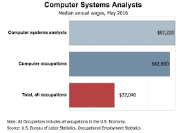

TOP 10 HIGHEST PAYING JOBS AFTER B.TECH
1. Software Developer

Minimum degree required: Bachelor's
Years of experience required: 0
Good fit for:-
- People with strong communication and interpersonal skills
- Creative and analytical people with a knack for problem-solving
- Detail-oriented professionals
STATISTICAL OUTLOOK for Software Engineer:-
2. AI Research Scientist
Minimum degree required: Master's
Years of experience required: 0
Good fit for:-
- Logical thinkers with mathematics, analytical, and problem-solving skills
- Professionals with communication and interpersonal strengths
- Leaders and innovators
STATISTICAL OUTLOOK for AI Research scientist:-
3. Data Scientists

Minimum degree required: Bachelor's or master's
Years of experience required: 0
Good fit for:-
- Analytical professionals with strengths in mathematics and problem-solving
- People with a knack for creativity and ingenuity
STATISTICAL OUTLOOK for Data scientist:-

4. Machine Learning Engineer

Minimum degree required: Master's
Years of experience required: 0
Good fit for:-
- Logical and analytical professionals with strong math and technical skills
- Curious and detail-oriented academics with communication ability
STATISTICAL OUTLOOK for Machine learning Engineer:-
5. Computer Network Architect

Minimum degree required: Bachelor's
Years of experience required: 1-2
Good fit for:-
- Detail-oriented professionals with a broad knowledge of network and IT technologies
- Leaders with communication and interpersonal skills
STATISTICAL OUTLOOK for computer network archietect:-

6. Mobile Application Designer
Minimum degree required: Associate or Bachelor's
Years of experience required: 0
Good fit for:-
- Creative IT specialists with problem-solving and analytical skills
- Professionals with good customer service and communication skills
STATISTICAL OUTLOOK for Mobile application designer:-

7.Computer systems analyst

Minimum degree required: Bachelor's
Years of experience required: 0
Good fit for:-
- People with analytical skills
- Leaders with strong communication abilities
- Creative problem-solvers
STATISTICAL OUTLOOK for Computer system analyst:-

8. Computer programmer

Minimum degree required: Bachelor's
Years of experience required: 0
Good fit for:-
- Professionals with computer and troubleshooting knowledge
- Detail-oriented people with strong concentration skills
- Analytical problem-solvers
STATISTICAL OUTLOOK for Computer programmer:-

9. Network and computer systems administrator

Minimum degree required: Bachelor's
Years of experience required: 0
Good fit for:-
- Multitaskers with analytical mindsets
- Problem-solvers with strong communication and interpersonal skills
- IT professionals with broad technological skill sets
STATISTICAL OUTLOOK for network and computer system administrator:-

10. Web developer

Minimum degree required: Bachelor's
Years of experience required: 0
Good fit for:-
- Creative-minded professionals with coding and problem-solving skills
- People with strong communication and customer service abilities
- Detail-oriented professionals
STATISTICAL OUTLOOK for Web developer:-